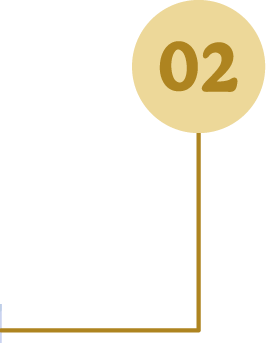
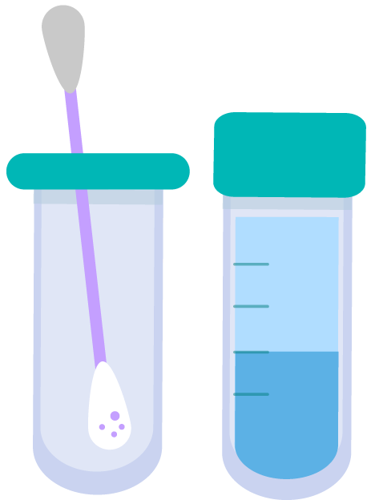

2. Pruebas de detección molecular del VPH-AR
Da clic en los números para descubrir más información:


Página 4 de 9


2. Pruebas de detección molecular del VPH-AR
Da clic en los números para descubrir más información: